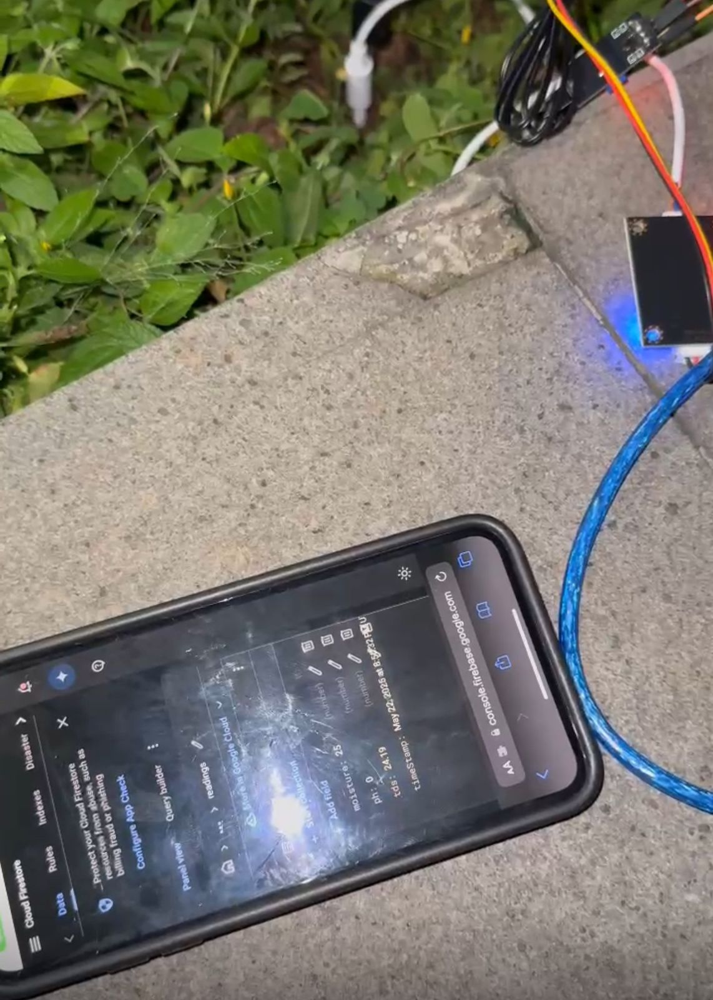

Projects

Land Quality Sensor
Land Quality Sensor
A real-time IoT monitoring system for agriculture that measures pH, moisture, and TDS levels to improve crop management and prevent data manipulation in traditional farming.
MQTT Protocol • Firebase Firestore • React.js • ESP32 + sensors
View on GitHub
AI Healthcare
AI Healthcare
A web-based disease prediction and medicine recommendation system using symptom input and machine learning.
Flask • Scikit-learn • Python • Pickle
View on GitHub

Wumpus Game
Wumpus Game
An interactive AI-powered grid game that simulates agent-based decision-making using logical inference in the Wumpus World.
Python • Laravel • HTML/CSS • JavaScript
View on GitHub
Docker Web App
Docker Web App
A containerized web application that uses Docker to streamline deployment. It showcases how to build, run, and manage a simple Python web server in isolated environments for development and production.
Docker • Flask • HTML/CSS • Python
View on GitHub
Android Communication App
Android Communication App
A mobile communication application inspired by LINE, developed for university users to send messages, access announcements, and stay connected. Built with Java and Firebase for real-time interaction and data management.
Android • Java • Firebase • XML
View on GitHub

Docker Web App
DSA Final Project
A final project for the Data Structure and Algorithm course. It contains implementations of key algorithms such as sorting, searching, tree traversal, and graph traversal using Python. Designed for academic learning and demonstration.
Python • Algorithms • Data Structures • CLI
View on GitHub